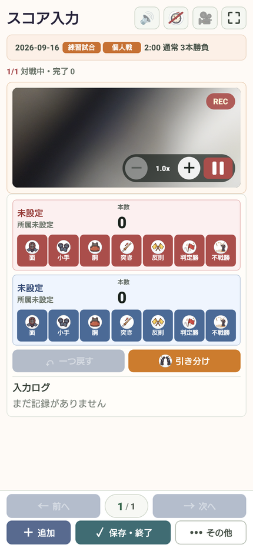

08 / 記録する
録画しながらスコアを付ける
大切な試合を、結果と映像の両方で残します。
操作の入口スコア入力 → カメラ／録画
端末を安定させる
試合全体が入る位置に端末を固定し、カメラ映像を確認します。
録画を開始する
録画ボタンを押し、「REC」表示を確認します。音声も残す場合はマイクの権限を確認します。
映像を見ながら記録する
タイマーを開始し、一本や反則を入力します。録画の中断・再開はカメラ側の操作で行います。
録画を終了し、保存を待つ
試合後の挨拶まで撮影できたら終了します。動画の保存が終わってから、次の対戦へ進みます。

